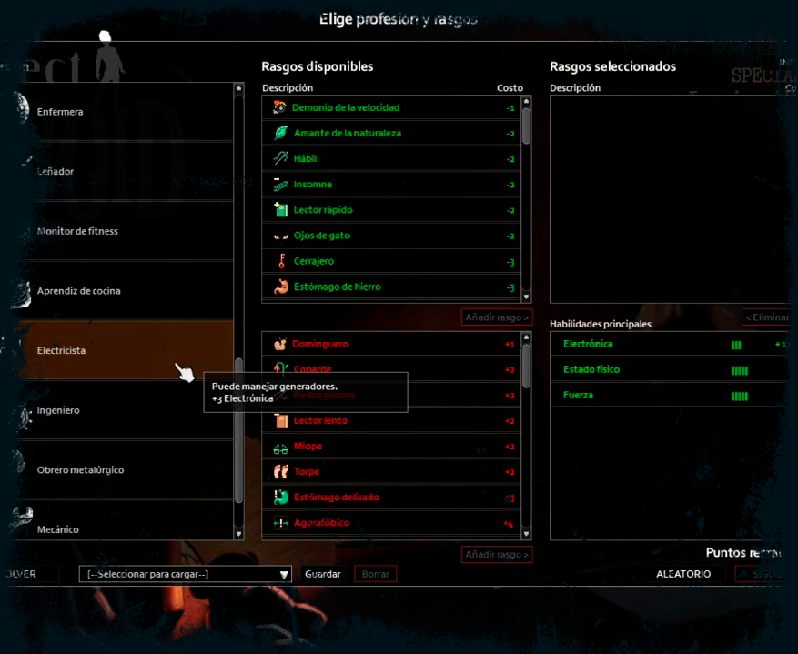
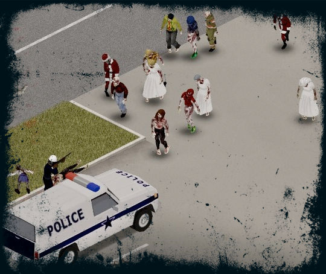
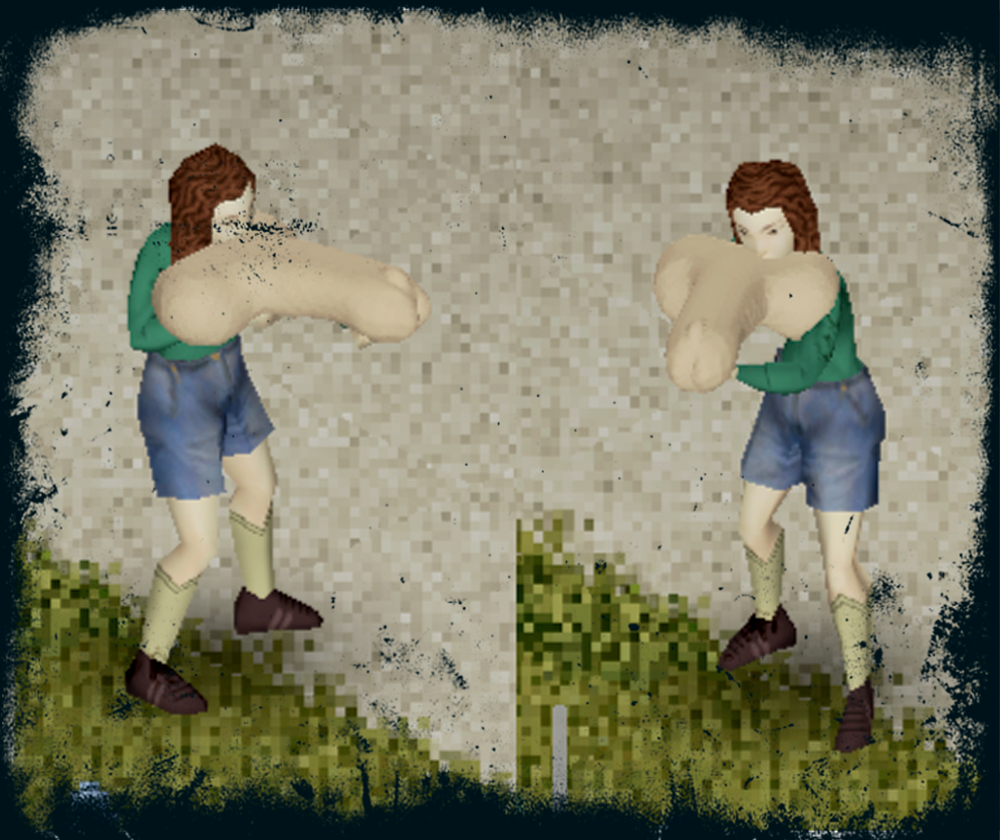

APRENDE A SOBREVIVIR
PERSONAJE
La creación de personajes es uno de los aspectos más importantes al comenzar tu juego, y aprender a crear uno bien equilibrado puede ser difícil, especialmente cuando tienes muy poca experiencia.
COMBATE
Miles de zeds 'adecuados' deambulan por las calles. Los disparos y el combate podrían conducir a una mordedura...
SOBREVIVE

Busca comida, crea artículos y construye edificios y defensas en tu lucha contra la muerte inevitable.
CONSTRUCCIÓN

Si quieres sobrevivir en Project Zomboid, necesitarás una base. Mucho más que un lugar al que llamar hogar, las bases proporcionan espacio de almacenamiento para tus bienes almacenados y seguridad contra el mal tiempo y las hordas pasajeras.
EXPLORACIÓN

Explora las ciudades isométricas de Kentucky en nuestro vasto mapa en crecimiento. ¿Dónde harás tu base ?
SOPORTE DE MODS
Potente compatibilidad con mods de Lua, con mapas y herramientas de desarrollo disponibles para la comunidad.